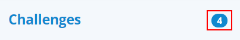
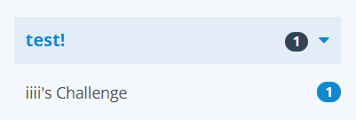
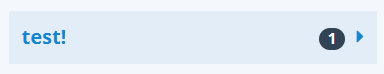
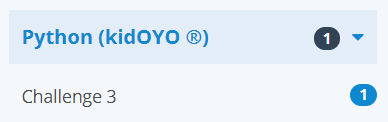
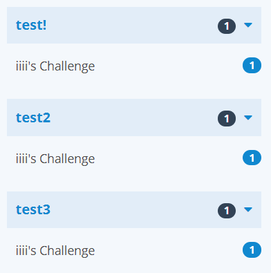
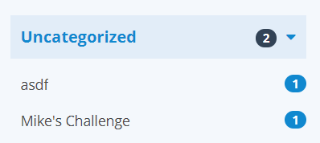
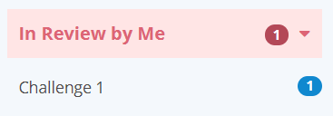

In this section we'll break down how to read each part of the left side panel in the Check Solutions tab.
Top of the Panel
On the top of the panel is the word Challenges with a number on the right side. The number on the right indicates the total amount of unique solutions you are currently eligible to check within this community group:

Note: This number, as well as the rest of the numbers on the page are accurate when the page is first loaded. Any solutions that were submitted after this page was loaded will be reflected the next time you refresh this page
Challenge Category Headers
Domestic Challenges
Challenge categories that are configured by your community group's admins will be reflected in this page's organizational structure. Challenges with unchecked solutions will always be rendered under at least one of these categories like so:

In this case, the category name is test!, and the black number on the right side of the label is how many solutions remain to be checked for this category. You may also expand and collapse each category by clicking anywhere on the label:

Foreign Challenges
Foreign challenges (challenges originally created outside your own community group, but then later shared in) will have any category configured by the original group's settings, and carry an extra label denoting that it came from that group. As an example, if your community had a challenge named Challenge 3 installed from a community in the kidOYO ® group, and it was part of A challenge category named Python by kidOYO, it would look like this on your dashboard:

Note: Your group's admins may not configure any foreign installed challenges into a domestic category
Challenges with Multiple Categories
Any challenge that is associated with two or more categories will be rendered under each category individually as shown here:

In this example, the challenge iiii's Challenge appears in categories test!, test2, and test3. When checking this challenge and the count gets updated on the page, the labels for every duplicate of iiii's Challenge on the left side panel will simultaneously be updated to reflect the new count.
Challenges With No Categories
Any challenge in your group that has no categories set will appear instead in a default category with the label Uncategorized at the bottom of this list:

Challenges In Review
If you have any solutions currently in review by yourself in your community group, they will appear at the top of the dashboard category list, with a special color with the title In Review By Me. Clicking any challenge in this special category will immediately load one of the solutions you currently have in review for this challenge
